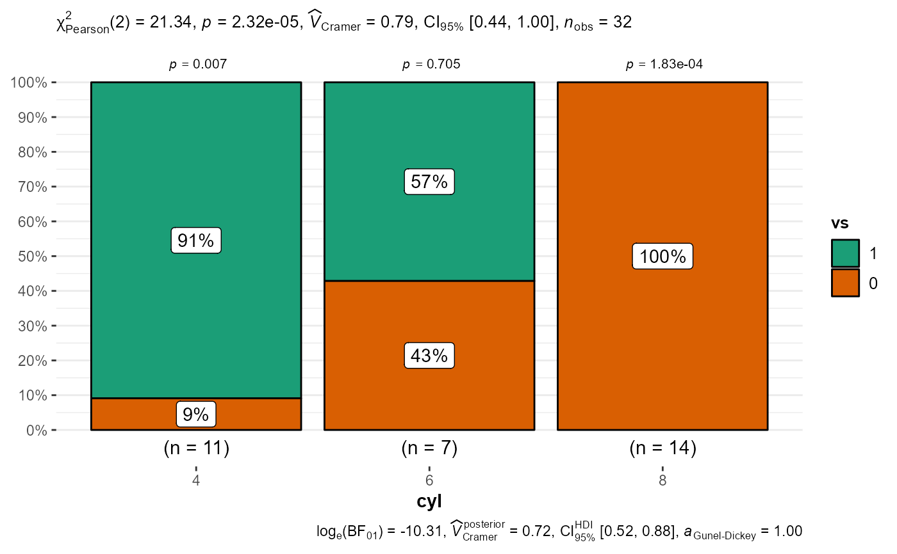

Bar charts for categorical data with statistical details included in the plot as a subtitle.
ggbarstats( data, x, y, counts = NULL, type = "parametric", paired = FALSE, results.subtitle = TRUE, sample.size.label = TRUE, label = "percentage", label.args = list(alpha = 1, fill = "white"), k = 2L, proportion.test = TRUE, perc.k = 0, bf.message = TRUE, ratio = NULL, conf.level = 0.95, sampling.plan = "indepMulti", fixed.margin = "rows", prior.concentration = 1, title = NULL, subtitle = NULL, caption = NULL, legend.title = NULL, xlab = NULL, ylab = NULL, ggtheme = ggplot2::theme_bw(), ggstatsplot.layer = TRUE, package = "RColorBrewer", palette = "Dark2", ggplot.component = NULL, output = "plot", ... )
Arguments
| data | A dataframe (or a tibble) from which variables specified are to be taken. A matrix or tables will not be accepted. |
|---|---|
| x | The variable to use as the rows in the contingency table. Please note that if there are empty factor levels in your variable, they will be dropped. |
| y | The variable to use as the columns in the contingency table.
Please note that if there are empty factor levels in your variable, they
will be dropped. Default is |
| counts | A string naming a variable in data containing counts, or |
| type | Type of statistic expected ( |
| paired | Logical indicating whether data came from a within-subjects or
repeated measures design study (Default: |
| results.subtitle | Decides whether the results of statistical tests are
to be displayed as a subtitle (Default: |
| sample.size.label | Logical that decides whether sample size information
should be displayed for each level of the grouping variable |
| label | Character decides what information needs to be displayed
on the label in each pie slice. Possible options are |
| label.args | Additional aesthetic arguments that will be passed to
|
| k | Number of digits after decimal point (should be an integer)
(Default: |
| proportion.test | Decides whether proportion test for |
| perc.k | Numeric that decides number of decimal places for percentage
labels (Default: |
| bf.message | Logical that decides whether to display Bayes Factor in
favor of the null hypothesis. This argument is relevant only for
parametric test (Default: |
| ratio | A vector of proportions: the expected proportions for the
proportion test (should sum to 1). Default is |
| conf.level | Scalar between |
| sampling.plan | Character describing the sampling plan. Possible options
are |
| fixed.margin | For the independent multinomial sampling plan, which
margin is fixed ( |
| prior.concentration | Specifies the prior concentration parameter, set
to |
| title | The text for the plot title. |
| subtitle | The text for the plot subtitle. Will work only if
|
| caption | The text for the plot caption. |
| legend.title | Title text for the legend. |
| xlab | Custom text for the |
| ylab | Custom text for the |
| ggtheme | A function, |
| ggstatsplot.layer | Logical that decides whether |
| package | Name of the package from which the given palette is to
be extracted. The available palettes and packages can be checked by running
|
| palette | Name of the package from which the given palette is to
be extracted. The available palettes and packages can be checked by running
|
| ggplot.component | A |
| output | Character that describes what is to be returned: can be
|
| ... | Currently ignored. |
See also
Examples
# \donttest{ # for reproducibility set.seed(123) # association test (or contingency table analysis) ggstatsplot::ggbarstats( data = mtcars, x = vs, y = cyl )#> Warning: Chi-squared approximation may be incorrect# }